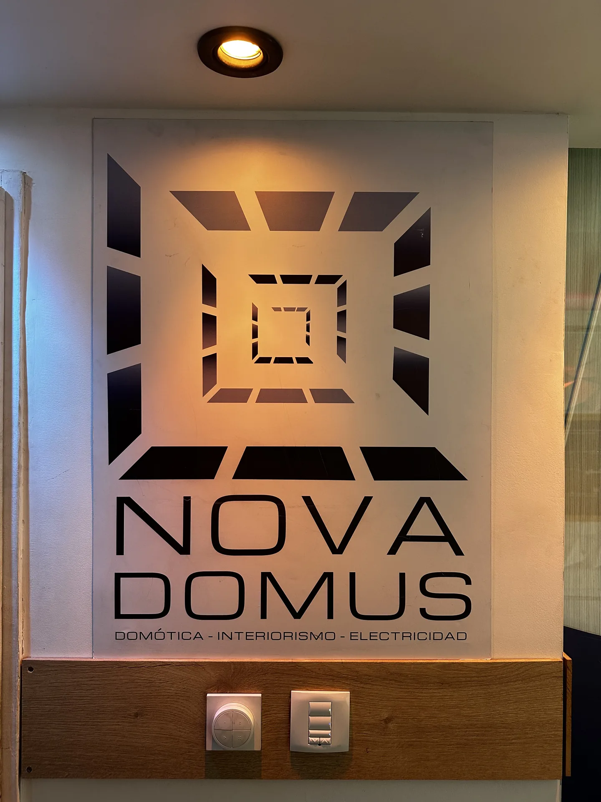

Qué ofrecemos
Conocé todo sobre nuestros servicios
En imágenes
Conocé nuestros servicios
Tocá una foto o el signo + para ver el detalle completo.
Todo esto lo coordina un solo responsable de punta a punta — conocé cómo dirigimos la obra en Dirección de Obra.
Galería
Fotos de obra
Fotos de obra — próximamente
Estamos documentando cada instalación en obra. Esta galería se completa con fotografía propia real, nunca de catálogo.
Fotos externas — próximamenteFachadas, ploteo de vehículos y cartelería de obra.
Fotos internas — próximamenteRacks, tableros y terminaciones en ambiente.